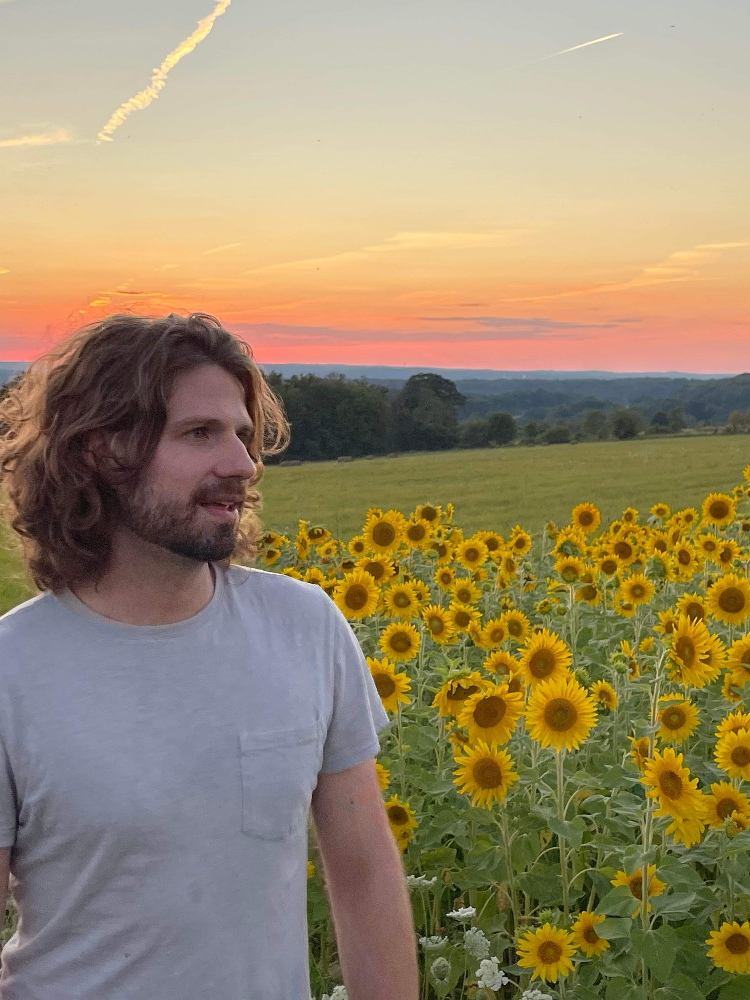

<div class="page">
    <div class="text">I’m a pianist turned software engineer who attempts to keep his feet in both fields. After graduating with a Master’s in Software Engineering from Drexel University, I’ve filled my time with learning.  Cloud computing, web development,  and the Java language are just a few of my interests. </div>
    
</div>